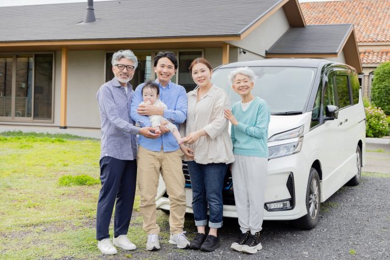
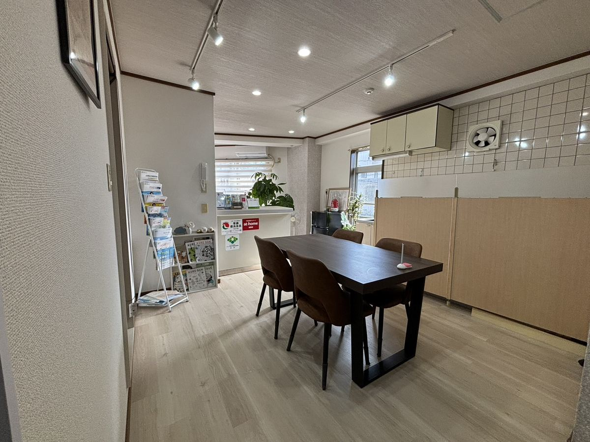
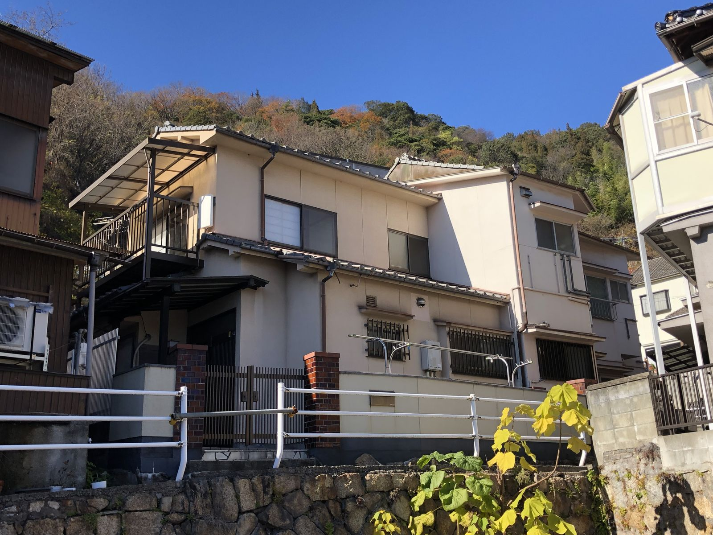
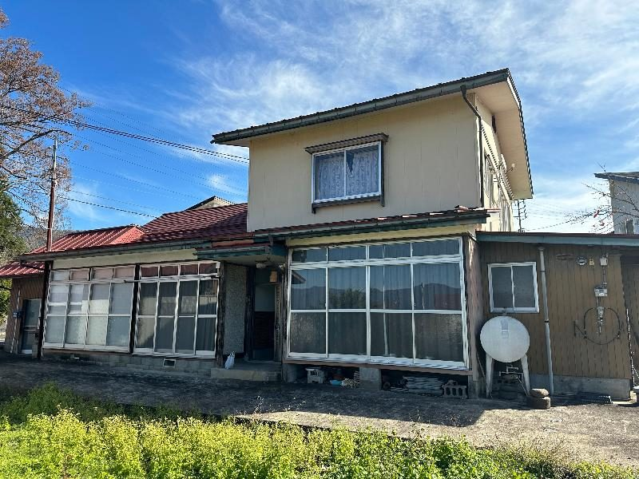

理由1
人が住まない家は、傷みが早い
閉め切った室内は湿気がこもり、カビや木材の腐朽が進みます。水を流さないと排水口の封水が切れ、悪臭や害虫の入り口に。雨漏りなどの異常は、発見が遅れるほど修繕費が大きくなります。
呉市の空き家管理サービス
月1回の巡回・換気・通水と、写真付きの報告書。
売却・買取・賃貸・駐車場活用のご相談まで、貸主業35年以上の私たちにお任せください。
お電話でも：0823-27-7600 9:30〜17:00（日曜・祝日定休）


呉市三条の事務所から地元の私たちが巡回します
WORRIES

空き家には3つの選択肢があります。
どれが良いか分からなくても大丈夫。3つを比べて、所有者様に合った方法をご提案します。
WHY
空き家を放置すると、3つのリスクが少しずつ大きくなります。

閉め切った室内は湿気がこもり、カビや木材の腐朽が進みます。水を流さないと排水口の封水が切れ、悪臭や害虫の入り口に。雨漏りなどの異常は、発見が遅れるほど修繕費が大きくなります。
あふれた郵便受けや伸び放題の庭は「人がいない家」の目印です。定期的に人が出入りし、きちんと管理されていることが外から見えるだけで、防犯効果が高まります。
空家等対策特別措置法により、管理が不十分な空き家は「管理不全空家」や「特定空家」として、市から指導・勧告を受けることがあります。勧告を受けると固定資産税の住宅用地特例が外れ、税負担が大きく増えることも。瓦や外壁が落ちて通行人にけがをさせた場合、所有者が責任を問われることもあります。
FEATURES
呉市三条の事務所から巡回します。台風・大雨・地震のあとの臨時巡回にも対応します（オプション）。
自社で不動産を所有・運営してきた経験から、傷みやすい箇所や修繕のタイミングを、所有者様の目線でお伝えします。
巡回のたびに、家の様子を写真付きでお届けします。遠方にお住まいでも、変化がひと目で分かります。
「この家をこの先どうするか」のご相談は無料です。当社に売却をご依頼中は、管理料が30%引きになります。
PRICE
どのプランも月1回訪問・写真付き報告書つき。料金は呉中央エリアの最低料金（税込）です。
こんな方におすすめ
戸建の空き家
こんな方におすすめ
戸建の空き家｜しっかり管理
こんな方におすすめ
マンション・アパートの1室
※ 表示の料金は呉中央エリアの料金で、あくまで最低料金です。条件や場所によってはお受けできない場合がございます。物件の場所や条件に応じた料金をご提案いたしますので、まずはお気軽にご相談ください。
売却ご依頼中は管理料30%引き。
当社と売却の専任媒介契約・専属専任媒介契約を結んでいる間は、基本プランの月額料金が30%引きになります。
初回の現地確認・鍵のお預かり・管理表示板の設置（任意）は無料です。
まずは物件の状態を見せてください。
| 作業内容 | 料金（税込） |
|---|---|
| スポット点検単発での訪問。建物外観の確認・写真付き報告書 | 1回 5,500円〜 |
| 臨時巡回 ※台風・大雨・地震のあと、所有者様のご依頼時 | 1回 3,300円〜 |
| 郵便物の転送 ※ | 1回 550円〜＋送料実費 |
| 除草・草刈り | 現地確認のうえお見積り |
| 樹木の剪定・伐採 | 現地確認のうえお見積り |
| 室内清掃（簡易清掃を超えるもの）、残置物・不用品の片付け | 現地確認のうえお見積り |
※ 臨時巡回・郵便物の転送は、基本プランをご契約のお客様に限ります。
※ オプションの料金も呉中央エリアの最低料金です。場所や条件に応じてお見積りします。
FLOW
お電話・LINE・フォームからお気軽にご連絡ください。ご相談・お見積りは無料です。
担当者が物件を確認し、建物の状態やご要望に合ったプランをご提案します。鍵のお預かり・管理表示板の設置（任意）も無料です。
契約期間は1年（自動更新）です。解約は1か月前までのお申し出で可能で、違約金はありません。
料金は前払いの銀行振込です。月払い・年払いからお選びいただけます（振込手数料はお客様のご負担となります）。
月1回巡回し、写真付きの巡回報告書をメール・LINE・郵送でお届けします。
呉市内全域（島しょ部は対象外です）
※ 条件や場所によってはお受けできない場合がございます。まずはご相談ください。
FAQ
呉市内全域に対応しています。島しょ部は対象外となりますので、ご了承ください。
はい。鍵をお預かりして巡回し、毎回の様子は写真付きの報告書でメール・LINE・郵送からお選びいただけます。お問い合わせもお電話・LINE・フォームで完結します。
契約期間は1年で、自動更新です。解約は1か月前までにお申し出いただければ可能で、違約金はかかりません。
前払いの銀行振込で、月払い・年払いからお選びいただけます。振込手数料はお客様のご負担となります。
通水・換気・通電確認を行うため、水道と電気の契約は継続をお願いしています。基本料金は所有者様のご負担となります。
はい。基本プランをご契約のお客様は、ご依頼に応じて臨時巡回（1回3,300円〜）を行います。単発で点検だけ頼みたい場合は、スポット点検（1回5,500円〜）もご利用いただけます。
草木の伸び具合や隣地への越境の確認は、基本プランに含まれています。除草・草刈り、樹木の剪定・伐採はオプションとして、現地確認のうえお見積りします。
自然災害や第三者の行為による建物の損害は、補償の対象外です。空き家になると火災保険の条件が変わる場合もあるため、損害保険代理店でもある当社で、空き家に合った補償の見直しもご相談いただけます。
はい、売却・賃貸などの活用相談は無料です。当社と売却の専任媒介契約・専属専任媒介契約を結んでいる間は、管理料が30%引きになります。状態を問わない自社での直接買取もご相談ください。
「この家は管理されています」と外から分かるようにする表示板です。設置は任意・無料で、防犯や、ご近所からの連絡先の案内に役立ちます。
COMPANY PROFILE
お気軽にお越しください
明るい自然光が差し込む打ち合わせカウンターで、空き家や相続、リフォームのお悩みをゆっくりご相談いただけます。
CONTACT
空き家管理のお見積り、査定依頼、お悩み相談など。秘密厳守・強引な営業は一切いたしません。